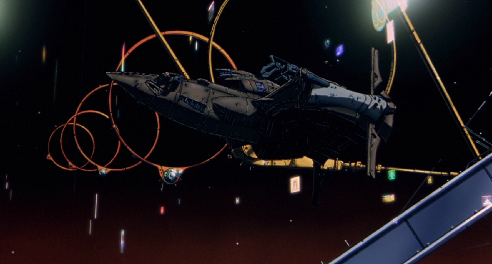
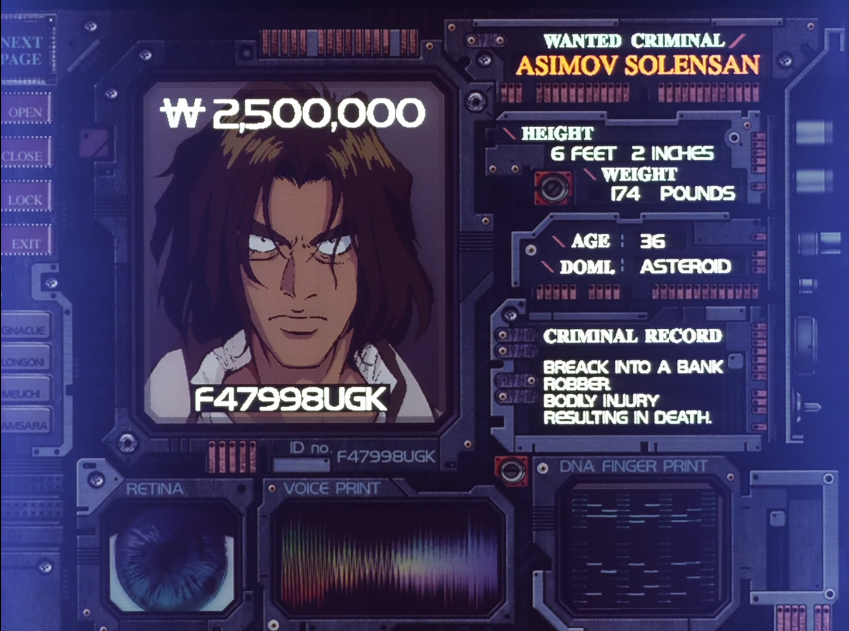
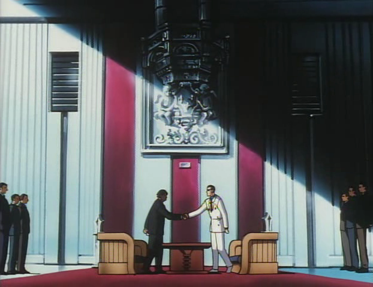
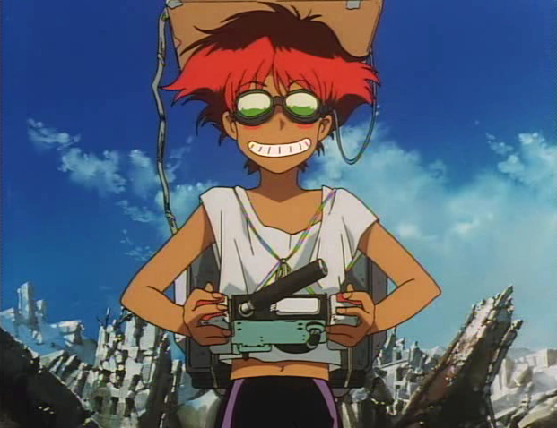
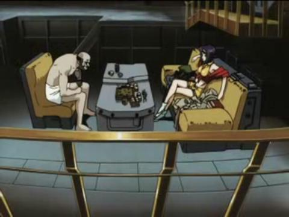
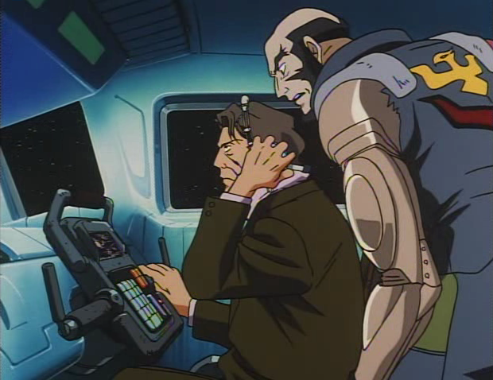
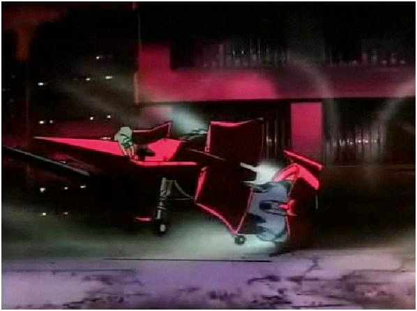
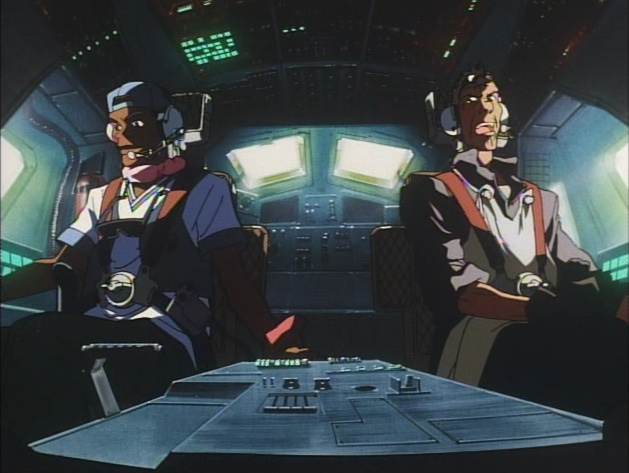
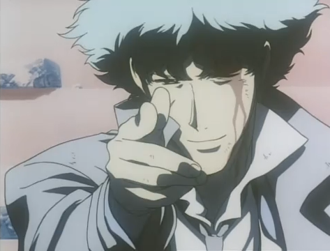

The Bebop is a converted interplanetary
fishing trawler owned and captained by Jet Black, bought in the Space Year 2071

SY 2074
Bebop is traveling near Mars, when an alert of a bounty appears for
the legendary convict, Asimov Solensan

SY 2076
Aboard the Bebop, Spike gets word of two great gangs, the Red Dragon
and White Tiger Crime syndicates beginning a war that could bring great profit
to him and the members of Bebop

SY 2078
The Bebop recieves a bounty for the hacker, Radical Edward, in which Spike
passes up, Jet Black and Faye on the other hand accept behind Spike's back
SY 2079
A rare lobster that Spike left in the basement of the Bebop, has grown
to a large scale and now is biting members of the Bebops crew.
SY 2082
The Bebop is in pursuit of a prison transport that has been overrun by the prisoners
it's transporting, Jet Black and an old friend of his board the ship in order to restore
order
SY 2084
With Faye and Jet on a bounty for Space pirates, the Bebop is damaged
significantly due to the pirates cunning, but Spike aboard the Swordfish II manages to
defeat them, at the same time running out of fuel, stranding him in Earth's orbit
SY 2084
With Spike's ship horribly crippled along with the Bebop in similar disarray, it seems as if Spike
Jey, Faye and the Bebop will be stranded in space forever, that's until Doohan comes
out of nowhere to the rescue with a remodled NASA Colombia shuttle
SY 2087
Spike sets out to finish and destroy the organization he used to work for, The Red
Dragon's, and its current leader, Vicious. With everything taken from him, Spike, takes the fight
to the syndicate, sustains heavy damage, but manages to destory most of the organization, along
with killing the leader, Vicious...in the end, Spike succombs to his wounds and dies